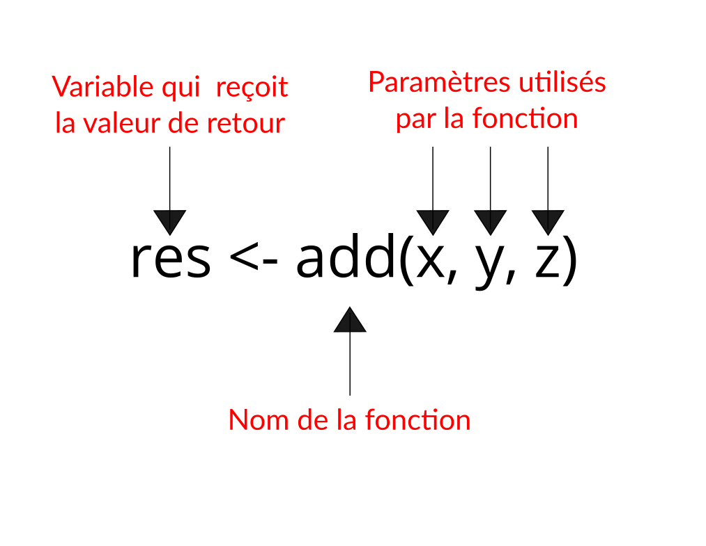

Capsule 3
Objectifs de la capsule
À la fin de cette capsule, vous serez en mesure de:
- Comprendre le principe des fonctions dans R.
- Connaître la structure des fonctions.
- Reconnaître et utiliser correctement les paramètres d’une fonction.
- Utiliser l’aide en ligne.
Capsule vidéo
Exercices
Note
Veuillez noter qu’il est possible d’avoir plus d’une bonne réponse par question. Vous pouvez reprendre chaque exercice grâce aux boutons “Start Over”. Le bouton “Indice” est là pour être utilisé!
Fonctions de base dans R
Écrivez une ligne de code qui calcule la somme de 2 et 2.
Solution
2 + 2[1] 4Compléter le code suivant pour calculer la moyenne du vecteur x.
Indice
?mean
Solution
x <- c(1, 2, NA, 3)
mean(x, na.rm = TRUE)[1] 2La fonction seq() permet de générer des valeurs séquentielles. Utilisez cette fonction pour créer un vecteur contenant les valeurs suivantes:
[1] 1 3 5 7 9 11 13
Indice
?seq
Solution
seq(1, 13, by = 2)[1] 1 3 5 7 9 11 13Paramètres des fonctions
Dans l’aide de R, on peut voir que la fonction mean() a la structure suivante.
mean(x, trim = 0, na.rm = FALSE, ...)La fonction rnorm() permet de générer aléatoirement une séquence de nombres suivant une loi de distribution Normale. Dans l’aide de R, on peut voir que la fonction a la structure suivante.
rnorm(n, mean = 0, sd = 1)Matériel accompagnateur
Principe et structure d’une fonction
Un des nombreux intérêts de R est qu’il donne accès à de nombreuses fonctions pour travailler avec nos données, en plus des opérateurs de base (+, -, *, /, ^). Les résultats des fonctions sont très variables, mais leur fonctionnement est toujours le même.
Une fonction suit toujours le même principe:
- Elle a un nom qui peut être très court, comme la fonction
c(). - Elle accepte des paramètres (aussi appelés arguments, surtout dans la documentation en anglais) entre les parenthèses qui suivent son nom.
- Elle retourne toujours un résultat (objet), et produit parfois une action spécifique, comme dessiner un graphique par exemple.

Fonctions de base
Il y a plusieurs fonctions de base que vous devriez connaître par coeur. Pour les démonstrations suivantes, nous utiliserons la fonction c() pour créer un vecteur 1 v contenant les valeurs de 1 à 6.
# La fonction c() veut dire "combine"
v <- c(1, 2, 3, 4, 5, 6)
v[1] 1 2 3 4 5 6Les fonctions suivantes retournent une seule valeur.
min(v) # Valeur minimum du vecteur[1] 1max(v) # Valeur maximum du vecteur[1] 6mean(v) # Valeur moyenne du vecteur[1] 3.5median(v) # Valeur médiane du vecteur[1] 3.5var(v) # Variance du vecteur[1] 3.5sd(v) # Écart-type du vecteur[1] 1.870829Les fonctions suivantes retournent un vecteur de valeurs.
range(v) # Étendu des valeurs du vecteur
cos(v) # Cosinus des valeurs du vecteur
log(v) # Le logarithme naturel (base e) du vecteurFinalement, les fonctions suivantes sont utilisées pour l’action qu’elles accomplissent. Elles retournent aussi une valeur qui contient beaucoup d’information et que vous serez souvent appelés à utiliser pour des traitements de données un peu plus complexes.
plot(v) # Graphique à partir des valeurs du vecteurwrite.csv(v, file = "monvecteur.csv") # Sauvegarde les valeurs du vecteurParamètres des fonctions
La plupart des fonctions de R utilisent des paramètres. Un paramètre est simplement une valeur que l’on fournit à une fonction pour contrôler certains aspects de son fonctionnement. Pour connaître les paramètres qu’il est possible de modifier pour une fonction, il faut aller consulter l’aide. Il existe deux moyens rapides pour accéder à l’aide d’une fonction. Par exemple, pour accéder à l’aide de la fonction mean(), on peut taper ces deux fonctions dans la console de RStudio 2 (fenêtre de commande en bas à gauche):
help(mean)?mean
Une fois la page d’aide ouverte, vous trouverez quelque chose de semblable à ce qui suit:
mean(x, trim = 0, na.rm = FALSE, ...)
On peut y voir qu’il y a trois essentiels paramètres associés à cette fonction.
xest un vecteur de valeurs (généralement numériques)trim = 0une fraction entre 0 et 0.5 d’observations à supprimer au début et à la fin du vecteurxavant le calcul de la moyenne.na.rm = FALSEune valeurlogicpermettant de conserver (na.rm = FALSE) ou supprimer (na.rm = TRUE) les valeurs manquantes avant le calcul de la moyenne. Vous utiliserez très souvent ce paramètre!
Il existe deux types de paramètres:
- Paramètres obligatoires: L’utilisateur doit nécessairement fournir une valeur.
- Paramètres optionnels: Une valeur par défaut est déjà spécifiée. Dans l’aide de la fonction, les paramètres optionnels sont précédés par le signe “=”.
Par exemple, dans la fonction mean(), x est un paramètre obligatoire et na.rm = FALSE est un paramètre optionnel.
Dans l’exemple suivant, on crée un vecteur v contenant une valeur manquante à la position 3.
v <- c(1, 2, NA, 3)
mean(v)[1] NAComme on le constate, R n’est pas capable de calculer spontanément la moyenne, car il y a une valeur manquante. Basé sur notre lecture de l’aide, on peut modifier la valeur du paramètre na.rm pour indiquer à la fonction mean() de supprimer les valeurs manquantes avant le calcul.
v <- c(1, 2, NA, 3)
mean(v, na.rm = TRUE)[1] 2Le calcul revient donc à faire l’opération suivante:
(1 + 2 + 3) / 3[1] 2Ordre et nom des paramètres
L’ordre des paramètres passés à une fonction R est important. Il existe deux façons de spécifier les paramètres d’une fonction.
- Les paramètres nommés
- Les paramètres non nommés
Si on revient à la fonction mean(), l’ordre des paramètres est x, trim et na.rm.
mean(x, trim = 0, na.rm = FALSE)L’appel de la fonction en utilisant les paramètres nommés veut simplement dire que nous sommes spécifiques sur les noms des paramètres utilisés. Dans ce cas, l’ordre des paramètres n’a pas d’importance. Dans l’exemple suivant, tous les appels de la fonction mean() sont équivalents. Notez qu’il est quand même recommandé de suivre l’ordre des paramètres présenté dans l’aide par souci de clarté du code.
v <- c(1, 2, 3)
mean(x = v, trim = 0, na.rm = FALSE)
mean(x = v, na.rm = FALSE, trim = 0)
mean(na.rm = FALSE, x = v, trim = 0)
mean(na.rm = FALSE, trim = 0, x = v)Avec la méthode des paramètres non nommés, il est possible d’omettre le nom des paramètres. Par exemple:
v <- c(1, 2, 3)
mean(v, 0, FALSE)Dans ce cas, il est obligatoire que l’ordre des paramètres suive celle de la signature de la fonction qui est spécifiée dans l’aide (i.e. mean(x, trim = 0, na.rm = FALSE)).
Astuce
Bien que l’appel d’une fonction avec des paramètres non nommés soit techniquement valide, il est recommandé d’utiliser des paramètres nommés, car cela rend le code plus clair et plus explicite.